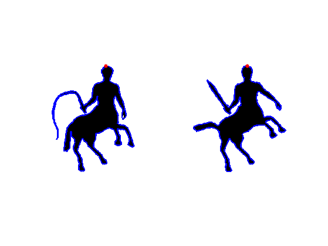
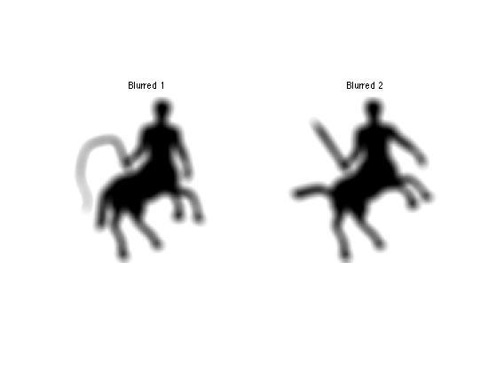
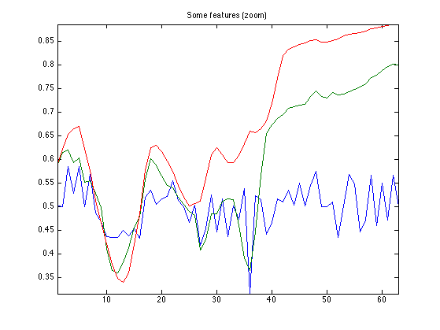
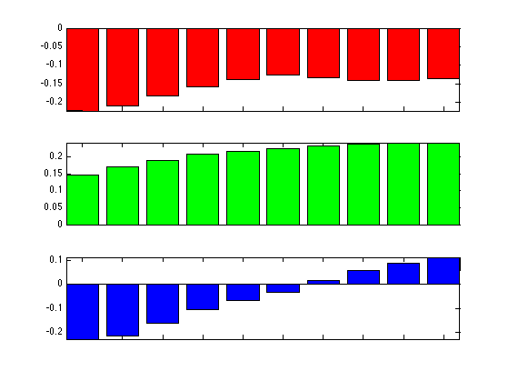
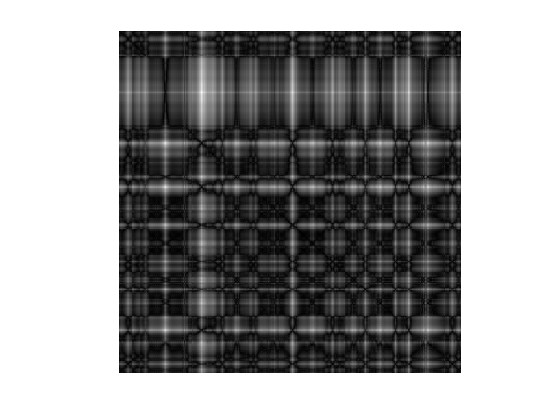
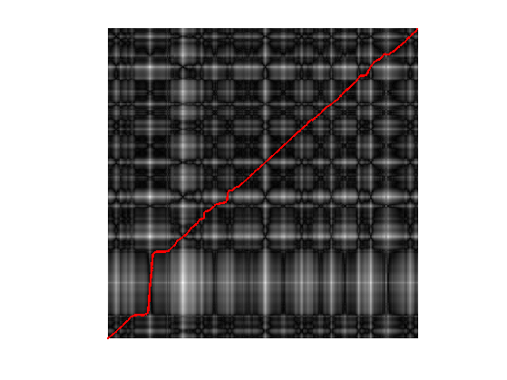
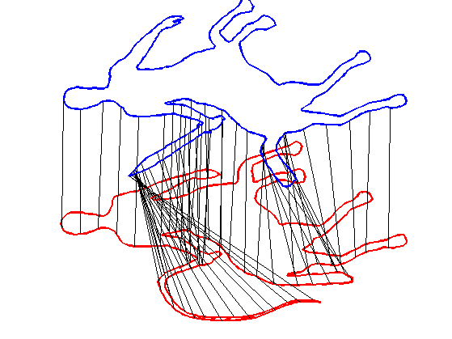

Shape Correspondence with Fast Marching
This tour explores the use of Fast Marching to compute shape correspondence.
Contents
Installing toolboxes and setting up the path.
You need to download the following files: signal toolbox, general toolbox and graph toolbox.
You need to unzip these toolboxes in your working directory, so that you have toolbox_signal, toolbox_general and toolbox_graph in your directory.
For Scilab user: you must replace the Matlab comment '%' by its Scilab counterpart '//'.
Recommandation: You should create a text file named for instance numericaltour.sce (in Scilab) or numericaltour.m (in Matlab) to write all the Scilab/Matlab command you want to execute. Then, simply run exec('numericaltour.sce'); (in Scilab) or numericaltour; (in Matlab) to run the commands.
Execute this line only if you are using Matlab.
getd = @(p)path(p,path); % scilab users must *not* execute this
Then you can add the toolboxes to the path.
getd('toolbox_signal/'); getd('toolbox_general/'); getd('toolbox_graph/');
2D Shape
A 2D shape is a connected compact planar domain.
It is represented as a black and white image corresponding to the indicator function of the set.
n = 250;
name = {'square' 'disk'};
name = {'centaur1' 'centaur2'};
M = rescale( load_image(name,n) );
Threshold to be sure to have a binary image.
M = perform_blurring(M,3);
M = {double(M{1}>.5) double(M{2}>.5)};
Display the shapes.
clf;
imageplot(M, {'Shape 1', 'Shape 2'});
Compute the boundaries of the shape.
for i=1:2 bound0{i} = compute_shape_boundary(M{i}); end
Re-sample the boundary
nbound = 500;
bound = {};
for i=1:2
nbound0 = size(bound0{i},2);
t = linspace(1,nbound0,nbound+1); t(end) = [];
bound{i}(1,:) = interp1( bound0{i}(1,:), t );
bound{i}(2,:) = interp1( bound0{i}(2,:), t );
end
Compute the correspondence between the two curve (this should be done automatically by testing several delta).
for i=1:2 [tmp,pt] = min(bound{i}(1,:)); bound{i} = [bound{i}(:,pt:end) bound{i}(:,1:pt-1)]; end
Display the boundaries.
clf; for i=1:2 b = bound{i}; subplot(1,2,i); hold on; imageplot(M{i}); hh = plot(b(2,:), b(1,:)); set(hh, 'LineWidth', 2); hh = plot(b(2,1), b(1,1), '.r'); set(hh, 'MarkerSize', 20); axis('ij'); end
Multiscale Curvature Descriptor
We compute a local descriptor for each point on the boundary, which is a low dimensional vector that sum up the local curvature properties of the shape.
We use a multiscale curvature defined as convolution with kernel of increasing radius, as explained in
Manay, S.; Cremers, D.; Byung-Woo Hong; Yezzi, A.J.; Soatto, S. Integral Invariants for Shape Matching IEEE Transactions on Pattern Analysis and Machine Intelligence, Volume 28, Issue 10, Oct. 2006, P.1602-1618
List of radius (scales for the descriptors).
nrad = 10; rlist = linspace(3,20,nrad);
Radius of the kernel (this will vary).
k = 4; r = rlist(k);
Compute ball of radious r.
x = -ceil(r):ceil(r); [b,a] = meshgrid(x,x); h = double( a.^2+b.^2<=r^2 ); h = h/sum(h(:));
Compute convolution.
Mh = perform_convolution(M,h);
Display.
clf;
imageplot(Mh,{'Blurred 1', 'Blurred 2'});
 Compute the value of the scale r descriptor Mh along the curve.
[Y,X] = meshgrid(1:n,1:n);
D = {};
for i=1:2
D{i}(k,:) = interp2(Y,X,Mh{i},bound{i}(2,:), bound{i}(1,:));
end
Exercice 1: (check the solution) Compute the full shape features d(k,i) for all points i and scales k.
exo1;
Display some locations
sel = ceil( [1 90 400] * nbound/500 );
col = {'r', 'g', 'b', 'k'};
clf; hold on;
imageplot(M{1});
for i=1:length(sel)
h = plot(bound{1}(2,sel(i)), bound{1}(1,sel(i)), [col{i} '.']);
set(h, 'MarkerSize', 40);
end
axis('ij');

Display three different features at some locations.
clf;
col = {'r', 'g', 'b', 'k'};
a = mean(mean(D{1}(:,sel)));
for i=1:length(sel)
subplot(length(sel),1,i);
h = bar(D{1}(:,sel(i))-a, col{i}); axis('tight');
set(gca, 'XTickLabel', []);
end
 Shape Comparison Matrix
A shape comparison matrix compare the features d(:,i) of two different shape.
Exercice 2: (check the solution) Compute the descriptor for all the values of r in rlist.
exo2;
Geodesic Matching
We use a method similar to the one explained in
Max Frenkel, Ronen Basri, Curve Matching Using the Fast Marching Method, EMMCVPR 2003, p. 35-51
Exercice 3: (check the solution) Compute a metric associated to C, by rescaling. Using the Fast Marching, compute the shortest paths gpath from point (1,1) to point (nbound,nbound). Record the length of this path, which is the value of the geodesic distance.
exo3;
Display the geodesic path.
hold on; imageplot(C); h = plot(gpath(2,:), gpath(1,:), 'r'); set(h, 'LineWidth', 2); axis('xy');
Display the matching in 3D;
clf;
col = {'r' 'b'};
clf; hold on;
delta = [0 n/2];
for i=1:2
h = plot3(bound{i}(1,[1:end 1]), bound{i}(2,[1:end 1]), delta(i)*ones(nbound+1,1), col{i});
set(h, 'LineWidth', 2);
end
t = round(linspace(length(gpath)/2.1,length(gpath),60));
for i=1:length(t)
i1 = round(gpath(1,t(i)));
i2 = round(gpath(2,t(i)));
a = bound{1}(:,i1);
b = bound{2}(:,i2);
h = plot3( [a(1) b(1)], [a(2) b(2)], delta, 'k-' );
set(h, 'LineWidth', 1);
end
view(-10,40);
axis('equal'); axis('off');
zoom(1.3);
